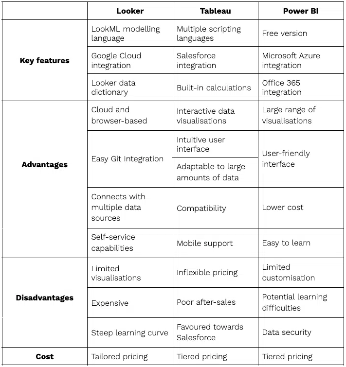

Brief Tool Histories:
- Power BI: A flagship product of Microsoft, Power BI evolved from Project Crescent and was publicly introduced in 2011. Rebranded as Power BI for Office 365 in 2013, it offers a seamless integration with Microsoft's suite of tools.
- Tableau: Originating in 2003 from Tableau Software, this tool was eventually acquired by Salesforce in 2019. It's renowned for its ability to convert raw data into interactive visualizations.
- Looker Studio: Initially known as "Google Data Studio", it was introduced by Google in 2016. It underwent a rebranding to Looker Studio in 2022.
Power BI:
| Advantages |
Disadvantages |
- Great integration with Microsoft products.
- Provides a wide range of visualization options.
- Intuitive and user-friendly interface.
- Cost-effective, with a free version available.
- Easy to learn, especially for Excel users.
- Seamless integration into Windows environment.
- Impressive load speeds and stability, especially with Microsoft tools.
- Depth of custom field creation with DAX functions.
|
- Limited customization options.
- Additional training required for deeper data analyses.
- Potential data security concerns with its cloud-based nature.
|
Looker:
| Advantages |
Disadvantages |
- Browser-based tool, part of Google’s cloud platform.
- Uses LookML, allowing data and calculations reuse.
- Cloud-based, accessible via browser, advanced security.
- Easy Git integration.
- Integrates with over 50 different data sources.
- Self-service capabilities and drag-and-drop functions.
- Free, making it ideal for startups.
|
- Limited basic visualization options compared to competitors.
- Pricier than Tableau and Power BI.
- Steep learning curve due to unique modelling language.
|
Tableau:
| Advantages |
Disadvantages |
- Interactive data visualizations.
- Can handle large data volumes with no performance impact.
- Intuitive UI for developers and non-developers.
- Compatible with multiple data sources and scripting languages.
- Mobile app for iOS and Android.
|
- Fixed pricing structure.
- Poor after-sales support.
- Development leans towards Salesforce integration.
|
Conclusion:
- Device & OS Compatibility: Power BI shines with its seamless integration into the Windows environment, making it the go-to tool for businesses heavily reliant on Microsoft's ecosystem.
- User Access: Power BI's sharing capabilities, especially within organizations using Microsoft products, offer a seamless experience. The familiarity of the Microsoft ecosystem can simplify collaboration.
- Load Speed & Stability: Power BI offers impressive load speeds, especially for businesses that have adopted Microsoft's suite of tools. Its stability is commendable, especially with large datasets.
- Visualization & Customization: Power BI provides a comprehensive range of visualization options, making it a top choice for businesses keen on detailed data analysis. Its integration with Microsoft's suite allows for enhanced customization capabilities.
- User Interface & Navigation: The intuitive interface of Power BI, combined with the familiarity of Microsoft's design philosophy, makes it a favorite among businesses used to Microsoft products.
- Creating Custom Fields: With its DAX functions, Power BI offers a depth of custom field creation unmatched by many competitors. This is particularly valuable for businesses looking for advanced data analysis options.
While all three tools offer their own set of advantages, Power BI stands out for businesses, especially those already entrenched in the Microsoft ecosystem. Its seamless integration, pricing flexibility, and robust features make it the top choice for a wide range of data visualization needs.
Looker is better tailored for startups or enterprises entrenched in the Google ecosystem, whereas Tableau excels in providing intricate data visualizations and is particularly favored by businesses seeking deep data analytics and a robust integration with a variety of data sources.